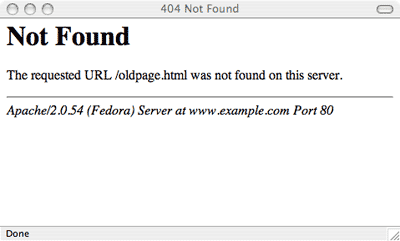
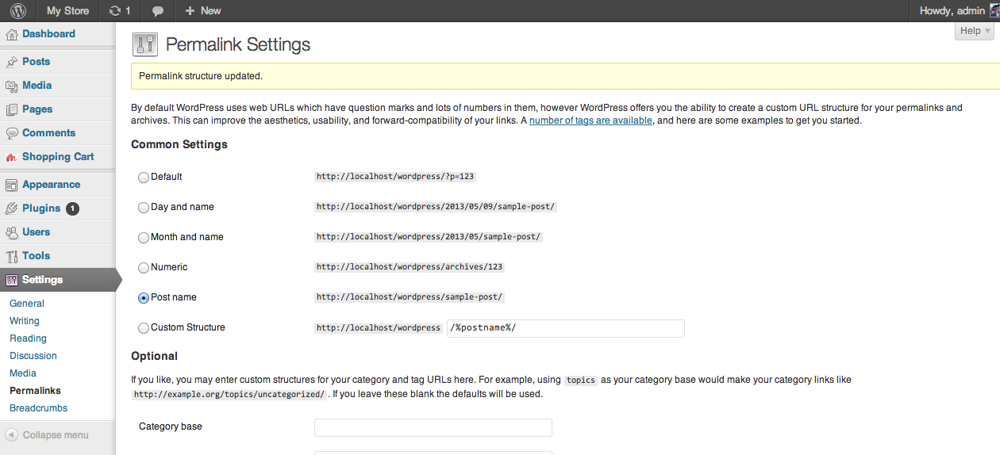

Enabling Inverse Scrolling in Ubuntu
berikut adalah shell script untuk me-reverse scrolling pada sebuah device_name
1 2 3 4 5 6 7 8 9 10 11 12 13 14 15 16 17 | |
berikut adalah shell script untuk me-reverse scrolling pada sebuah device_name
1 2 3 4 5 6 7 8 9 10 11 12 13 14 15 16 17 | |
Langkah-langkah untuk mengaktifkan reverse scrolling pada ubuntu:
1 2 3 4 5 6 | |
dari output tersebut dapat diperoleh dari touchpad yang ingin dimodif yaitu id=12
1 2 3 | |
yang mengatur arah scrolling adalah properti nomor 270.
1
| |
1
| |
beberapa kombinasi tools yang dapat mempercepat proses pembuatan html prototype adalah
Clay memiliki 2 perintah utama yaitu
1
| |
dan
1
| |
perintah clay run berguna untuk mengaktifkan http server. sehingga tanpa perlu menginstall xampp dkk, sudah bisa langsung mengakses http://localhost:8080 untuk mem-preview halaman web yang telah dibuat.
sedangkan perintah clay build berfungsi untuk mengubah project yang ada menjadi html static murni yang bisa diakses tanpa memerlukan Clay.
Grunt berfungsi untuk otomasi kegiatan yang repetitive. salah satu fungsi utamanya adalah mengeksekusi perintah tertentu pada saat ada perubahan pada file. yang artinya setiap kali tombol save ditekan pada text editor, grunt dapat diperintah untuk menjalankan perintah tertentu.
beberapa skenario yang dapat diuntungkan oleh grunt, antara lain
dan sepertinya banyak skenario yang lainnya. pada dasarnya, keberadaan grunt berfungsi sebagai otomasi proses software development dengan harapan meningkatnya produktifitas. jika penggunaan grunt membuat pekerjaan jadi lambat, berarti grunt termasuk overkill alias tidak diperlukan :D
ada beberapa situs yang menyediakan fitur instagram follow, diantaranya:
keduanya memiliki cara pengaktifan yang berbeda.
Untuk me-restore versi sebelumnya dari sebuah file di git, dapat menggunakan perintah berikut
1
| |
Berikut adalah langkah-langkah untuk menerapkan continuous deployment (automatic deployment) menggunakan Github dan DeployHQ
pada CSS terdapat properti untuk membuat text otomatis menjadi Title Case, yaitu membuat awal huruf pada setiap kata menjadi huruf besar. akan tetapi, properti tersebut tidak mengubah huruf lain menjadi kecil. Karenanya, perlu dikombinasi dengan perintah lain.
Sebagai contoh, jika menggunakan PHP, maka sebelum sebuah string ditampilkan, harus dikecilkan dulu menggunakan strtolower. kemudian pada CSS-nya, kita aktifkan properti text-transform, seperti berikut ini
1 2 3 | |
Baru saja kembali nguprek ubuntu setelah sekian lama ditinggal. Dan seperti biasa, saat main-main dual boot, bootloader-nya bermasalah.
Iseng-iseng ganti konfigurasi grub jadinya malah ilang grub-nya. Setiap kali booting, langsung masuk ke windows.
Alhamdulillah tidak terlalu panik, masih bisa tenang. Langsung kepikiran untuk pakai Live-CD
Berikut adalah langkah-langkah menggunakan Live CD untuk meng-update grub
Ctrl + Alt + T untuk membuka terminal.mount /dev/sda1 /mntfor i in /dev /dev/pts /proc /sys /run; do sudo mount -B $i /mnt$i; donesudo chroot /mntupdate-grubJika anda mencoba linux semisal ubuntu, seringkali anda menginstall-nya di partisi lain yang biasa disebut dengan dual boot. Dalam dunia dual boot, kemungkinan besar anda akan tersandung ke masalah boot manager.
salah satu contoh masalahnya seperti ini, ketika komputer dihidupkan dan hendak booting ke windows 7, muncul tampilan berikut

cara membetulkannya sebagai berikut:
Pada tampilan ini, pilih menu “Startup Repair”

Tunggu prosesnya berjalan

Jika proses berhasil, tekan Finish untuk merestart komputer.
beberapa hari ini berkutat dengan pembuatan website berbasis wordpress. sangat menyenangkan karena wordpress merupakan framework berbasis template. yang artinya, kalau ingin membuat website, ganti saja template default dengan template yang diinginkan.
salah satu contohnya adalah template untuk error 404. sebuah error yang salah satu kemunculannya karena user salah ketik URL.
secara teori, 404 merupakan jalan buntu pada sebuah website. di halaman ini perlu diberikan saran untuk user tentang apa yang perlu dilakukan. ada banyak contoh kreatif yang bisa jadi sumber inspirasi.
di wordpress, template yang bertanggung jawab untuk 404 adalah file 404.php.
secara default, template ini tidak akan aktif kalau kita tidak membuat file htaccess untuk mengaktifkannya. apapun perubahan yang kita lakukan pada file 404.php tidak akan ngefek. yang muncul hanyalah 404 default bawaan web server. misalnya seperti ini kalau kita pakai apache.

untuk bisa mengaktifkan tanpa harus membuat file htaccess, cukup ganti menu permalinks pada wordpress. ganti dengan opsi manapun selain default. sebagai contoh 